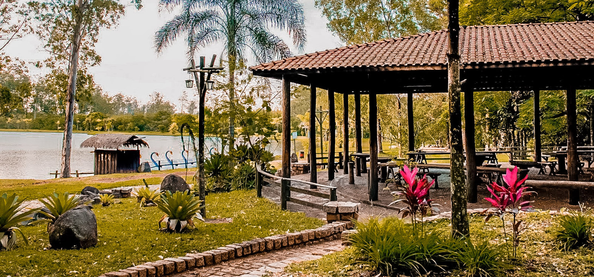

Pontos Turísticos
Shopping Limeira
O Limeira Shopping foi inaugurado em 22 de novembro de 2012 com a missão de oferecer, para Limeira e região, as melhores opções em compras, lazer, entretenimento, alimentação e serviços. Seu diferencial está na localização privilegiada, à margem da Rodovia Anhanguera, no quilômetro 150,5 à direita (no sentido interior-capital), e de fácil acesso à cidade pelo anel viário. Com lojas consagradas no cenário nacional como: Havan, Centerplex Cinemas, Cobasi, Lojas Americanas, Loja 1a99, Passarela, Polishop, Polo Wear, Detran SP, Poupatempo, Madero, Mercearia Bresser, Kopenhagen, dentre outras, o Limeira Shopping proporciona aos seus clientes conforto e praticidade tudo em um único só local. O Limeira Shopping é o seu lugar!!
Horto Florestal de Limeira
Com aproximadamente 300 alqueires, é um grande bosque de eucaliptos. Foi inaugurado em 1984, quando a Prefeitura tomou posse da área até então abandonada e que pertencia à Fepasa S.A. A área verde fica a nove quilômetros do Centro da cidade na via Jurandir Paixão (antiga via Tatuibi). Fazem parte do complexo o Motódromo, o Kartódromo, a Pista de Aeromodelismo, o Zoológico Municipal e o Mini-Sítio. Além disso, o espaço abriga o Parque Cidade da Criança, que conta com 21 conjuntos de brinquedos de madeira.
Gruta da Paz
Localizada na Praça Toledo Barros, foi concebida para servir como coreto, tendo sido construída à época da 1ª Guerra Mundial como monumento à paz. De autoria de Ettore Monti, retrata um castelo medieval e foi inaugurada em meados de 1920. Sua arquitetura tem muito a ver com o Maneirismo, que proporcionava maior liberdade e aproximação à natureza. Possui um labirinto traçado sob a cúpula, que reproduz um desenho que se encontra em inúmeras representações antigas, principalmente em moedas gregas de nossos, cunhadas entre os séculos I e VI a.C. De 1946 a 1967 funcionaram no seu interior um bar, um café e uma bomboniere. Reformada em 1990, por fora é revestida de pedras e por dentro é feita de tijolos, possuindo dois pavimentos, onde do superior se tem uma bela vista da praça.